第 6 章 状态反馈
直观地说，状态可以看成一种信息存储、记忆，或者过去原因的累积。当然，我们必须要求内部状态集合 \(\Sigma\) 足够丰富，能够携带关于 \(\Sigma\) 过去历史的全部信息，从而预测过去对未来的影响。不过，我们并不坚持状态必须是这类信息中最少的一组，虽然这常常是一个方便的假设。
本章说明如何用系统状态的反馈来塑造系统的局部行为。我们将引入可达性的概念，并用它研究怎样通过指定系统特征值来设计系统动态。特别地，本章会说明，在某些条件下，只要适当地反馈系统状态，就可以任意指定系统特征值。
6.1 可达性
控制系统的一个基本性质，是通过选择控制输入可以到达状态空间中的哪些点。事实证明，可达性也是理解反馈能够在多大程度上用于设计系统动态的基本概念。
可达性的定义
先忽略系统的输出测量，只关注状态演化：
其中 \(x\in\mathbb{R}^n\)、\(u\in\mathbb{R}\)，\(A\) 是 \(n\times n\) 矩阵，\(B\) 是列向量。一个基本问题是：能否找到控制信号，使得状态空间中的任意一点都能通过某种输入选择到达。为研究这个问题，定义可达集 \(R(x_0,\le T)\)：它是所有满足下面条件的点 \(x_f\) 的集合，即存在输入 \(u(t)\)、\(0\le t\le T\)，能够把系统从 \(x(0)=x_0\) 驱动到 \(x(T)=x_f\)。图 6.1a 示意了这个概念。
定义 6.1 可达性 如果对任意 \(x_0,x_f\in\mathbb{R}^n\)，都存在 \(T>0\) 和 \(u:[0,T]\to\mathbb{R}\)，使相应解满足 \(x(0)=x_0\)、\(x(T)=x_f\)，则称这个线性系统是可达的。
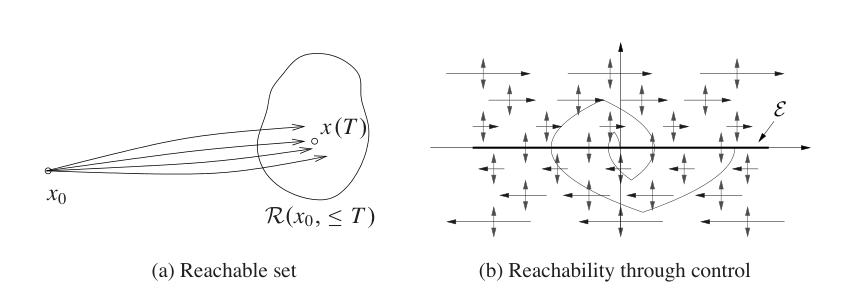
可达性的定义讨论的是能否以暂态方式到达状态空间中的所有点。在许多应用中，我们最关心到达的是系统的平衡点集合，因为一旦到达这些点，就可以停留在那里。所有由常值控制产生的可能平衡点组成集合
这意味着，可能的平衡点位于一个一维，或可能更高维的子空间中。如果矩阵 \(A\) 可逆，这个子空间由 \(A^{-1}B\) 张成。下面例子提供一些直观认识。
例 6.1 双积分器
考虑由双积分器构成的线性系统，其动态为
图 6.1b 给出了该系统的相图。开环动态，也就是 \(u=0\) 的情形，用水平箭头表示：当 \(x_2>0\) 时箭头向右，当 \(x_2<0\) 时箭头向左。控制输入用竖直方向的双向箭头表示，对应于我们可以设定 \(\dot x_2\) 的值。平衡点集合 \(E\) 对应于 \(x_1\) 轴，并且 \(u_e=0\)。
先假设希望从初始条件 \((a,0)\) 到达原点。我们可以在相平面中直接让状态上下运动，但左右方向的运动必须依靠自然动态。如果 \(a>0\)，可以先设 \(u<0\)，使 \(x_2\) 变为负。一旦 \(x_2<0\)，\(x_1\) 就开始减小，状态向左移动。过一段时间后，可以把 \(u\) 设为正，使 \(x_2\) 回到零附近，并减慢 \(x_1\) 方向的运动。如果让 \(x_2>0\)，系统状态就会朝相反方向移动。
图 6.1b 中显示了一条把系统带到原点的示例轨迹。注意，如果把系统驱动到一个平衡点，就可以无限期停留在那里，因为当 \(x_2=0\) 时 \(\dot x_1=0\)。但如果到达状态空间中的其他点，就只能以暂态方式经过该点。
为了找到线性系统可达的一般条件，我们先给出一个基于冲激函数形式计算的启发式论证。还要注意，如果能够通过某种输入选择到达状态空间中的所有点，那么自然也能到达所有平衡点。
可达性检验
当初始状态为零时，系统对输入 \(u(t)\) 的响应为
如果选取输入为第 5.3 节定义的冲激函数 \(\delta(t)\)，则状态变为
注意，状态会对冲激发生瞬时变化。对冲激响应求导，就能得到对冲激函数导数的响应，见习题 5.1：
继续这个过程，并利用系统线性性，输入
给出的状态为
令 \(t\) 从正值趋近于零，得到
右端是下面矩阵各列的线性组合：
因此，要到达状态空间中的任意点，就需要矩阵 \(W_r\) 有 \(n\) 个线性无关的列。矩阵 \(W_r\) 称为可达性矩阵。
由冲激函数及其导数组成的输入是一种非常剧烈的信号。为了看出任意点也能用更平滑的信号到达，可以使用卷积方程。假设初始条件为零，则线性系统的状态为
由矩阵函数理论，特别是 Cayley-Hamilton 定理，见习题 6.10，可知
其中 \(\alpha_i(\tau)\) 是标量函数。于是
我们再次看到，右端是式 (6.3) 中可达性矩阵 \(W_r\) 各列的线性组合。这个基本思路引出下面定理。
定理 6.1 可达性秩条件 线性系统可达，当且仅当可达性矩阵 \(W_r\) 可逆。
这个定理的形式证明超出了本书范围，但证明思路与上面的草图一致，可见大多数线性控制理论教材，例如 Callier 和 Desoer [48] 或 Lewis [136]。下面用一个例子说明可达性的概念。
例 6.2 平衡系统
考虑例 2.1 中引入、图 6.2 所示的平衡系统。回忆一下，这个系统是一类质心位于支点上方的例子的模型。图 6.2a 中的赛格威个人运输车就是一个例子。一个很自然的问题是，能否通过对车轮施加适当力，把系统从一个静止点移动到另一个静止点。
系统的非线性运动方程见式 (2.9)，这里重写为
为简化起见，取 \(c=\gamma=0\)。在平衡点
附近线性化，动态矩阵与控制矩阵为
其中
可达性矩阵为
这个矩阵的行列式为
因此系统可达。这意味着，可以把系统从任意初始状态移动到任意最终状态。特别地，总能找到输入，把系统从某个初始状态带到一个平衡点。
理解系统为何不可达也很有用。图 6.3 给出了一个不可达系统的例子。系统由两个相同子系统组成，并且它们受到同一个输入。显然，我们不能让第一个和第二个子系统分别做不同的事情，因为二者输入相同。因此无法到达任意状态，系统不可达，见习题 6.3。
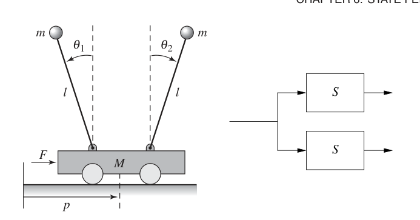
不可达还可能由更细致的机制产生。例如，如果存在某个状态线性组合始终保持常数，那么系统就不可达。设存在行向量 \(H\)，使得
那么 \(H\) 同时位于 \(A\) 和 \(B\) 的左零空间中，并且
因此，可达性矩阵不是满秩。在这种情形下，如果初始条件为 \(x_0\)，而希望到达的状态 \(x_f\) 满足 \(Hx_0\ne Hx_f\)，由于 \(Hx(t)\) 保持常数，任何输入 \(u\) 都无法把系统从 \(x_0\) 移动到 \(x_f\)。
可达标准形
前几章已经看到，改变坐标并在变换坐标 \(z=Tx\) 中写出系统动态，常常很方便。坐标变换的一个用途，是把系统转化为某种标准形，使某些分析变得容易。
如果线性状态空间系统的动态为
并且矩阵中低一条对角线上按顺序为 1，则称系统处于可达标准形。图 6.4 给出了可达标准形系统的框图。可以看出，出现在 \(A\) 和 \(B\) 矩阵中的系数会直接出现在框图中。另外，系统输出是各个积分环节输出的一个简单线性组合。
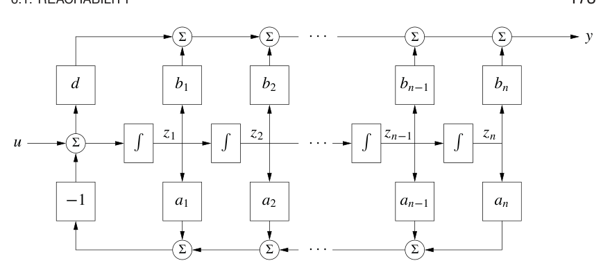
可达标准形系统的特征多项式为
它的可达性矩阵也具有相对简单的结构：
其中星号表示可能非零的项。由于这个矩阵具有三角结构，没有任何一列可以由其他列线性组合得到，所以它满秩。
下面考虑如何改变坐标，使系统动态写成可达标准形。令 \(A,B\) 表示给定系统的动态矩阵和控制矩阵，令 \(\tilde A,\tilde B\) 表示可达标准形下的动态矩阵和控制矩阵。假设希望通过坐标变换 \(z=Tx\) 把原系统转化为可达标准形。上一章已经说明，变换后系统的动态矩阵和控制矩阵为
变换后系统的可达性矩阵为
逐项变换有
依此类推。因此
由于 \(W_r\) 可逆，可以求出把系统转化为可达标准形的变换：
下面例子说明这个方法。
例 6.3 转换到可达形式
考虑一个简单二维系统
我们希望找到把系统变为可达标准形的变换：
系数 \(a_1,a_2\) 可由原系统特征多项式确定：
因此
两个系统的可达性矩阵为
变换矩阵为
因此坐标
把系统置于可达标准形。
本节结果可概括为下面定理。
定理 6.2 可达标准形 设 \(A\) 和 \(B\) 是一个可达系统的动态矩阵和控制矩阵。则存在变换 \(z=Tx\)，使得在变换后的坐标中，动态矩阵和控制矩阵处于可达标准形 (6.6)，并且 \(A\) 的特征多项式为
这个定理的一个重要含义是，对任何可达系统，都可以不失一般性地假设坐标已经选好，使系统处于可达标准形。这对证明特别有用，本章后面会看到。不过，对高阶系统，系数 \(a_i\) 的微小变化可能导致特征值发生很大变化。因此，可达标准形并不总是数值条件良好，使用时需要谨慎。
6.2 通过状态反馈实现稳定化
动态系统的状态是一组变量，它们允许预测系统未来的发展。现在研究通过反馈状态来设计系统动态的想法。为简单起见，假设待控制系统由线性状态模型描述，并且只有一个输入。反馈控制律将围绕一个思想逐步建立：把闭环特征值放置在希望的位置。
状态空间控制器结构
图 6.5 是一个使用状态反馈的典型控制系统图。完整系统包括线性过程动态、控制器元素 \(K\) 和 \(k_r\)、参考输入或命令信号 \(r\)，以及过程扰动 \(d\)。反馈控制器的目标是在存在扰动和过程动态不确定性时，调节系统输出 \(y\)，使它跟踪参考输入。
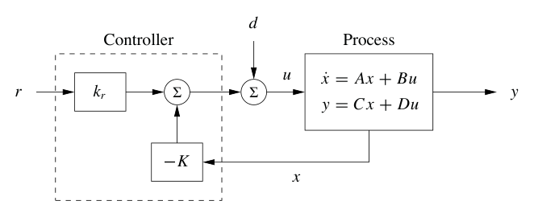
控制设计中的一个重要元素是性能指标。最简单的性能指标是稳定性：没有任何扰动时，希望系统的平衡点渐近稳定。更复杂的性能指标通常会给出系统阶跃响应或频率响应的期望性质，例如指定阶跃响应的上升时间、超调量和调节时间。最后，我们常常还关心系统的扰动衰减性质：在经历扰动输入 \(d\) 时，能够在多大程度上让输出 \(y\) 保持在期望值附近。
考虑由线性微分方程描述的系统
这里暂时忽略扰动信号 \(d\)。我们的目标是把输出 \(y\) 驱动到给定参考值 \(r\)，并保持在那里。注意，并非所有平衡点都可以维持，见习题 6.8。
先假设状态向量的所有分量都可以测量。由于时刻 \(t\) 的状态包含预测系统未来行为所需的全部信息，最一般的时不变控制律就是状态和参考输入的函数：
如果反馈限制为线性形式，就可以写成
其中 \(r\) 是参考值，这里先假设为常数。
这个控制律对应图 6.5 的结构。负号是一种约定，表示通常采用负反馈。把反馈 (6.10) 施加到系统 (6.9) 后，得到闭环系统
我们希望确定反馈增益 \(K\)，使闭环系统具有特征多项式
这个控制问题称为特征值配置问题，也称为极点配置问题。极点将在第 8 章更正式地定义。
注意，\(k_r\) 不影响系统稳定性，稳定性由 \(A-BK\) 的特征值决定，但 \(k_r\) 会影响稳态解。特别地，闭环系统的平衡点和稳态输出为
因此应当选择 \(k_r\)，使 \(y_e=r\)，也就是期望输出值。由于 \(k_r\) 是标量，在最常见的 \(D=0\) 情形中容易得到
注意，\(k_r\) 正好是闭环系统零频增益的倒数。\(D\ne0\) 时的解留作习题。
利用增益 \(K\) 和 \(k_r\)，就能设计闭环系统动态，使之满足目标。为了说明如何构造这种状态反馈控制律，先看几个提供直观认识的例子。
例 6.4 车辆转向
例 5.12 中推导了车辆转向的归一化线性模型。描述横向偏差的动态为
系统的可达性矩阵为
由于 \(\det W_r=-1\ne0\)，系统可达。
现在希望设计一个控制器，使动态稳定，并跟踪给定的车辆横向位置参考值 \(r\)。为此引入反馈
闭环系统变为
闭环系统特征多项式为
假设希望用反馈把系统动态设计为具有特征多项式
比较这个多项式和闭环系统特征多项式，可得反馈增益应选为
式 (6.13) 给出 \(k_r=k_1=\omega_c^2\)，控制律可写为
图 6.6 显示了不同设计参数下闭环系统的阶跃响应。图 6.6a 显示 \(\omega_c\) 的影响：\(\omega_c\) 增大时响应速度提高。\(\omega_c=0.5\) 和 1 时响应具有合理超调量。对 \(\omega_c=0.5\)，调节时间约为 15 个车长，超出图中范围；对 \(\omega_c=1\)，调节时间降至约 6 个车长。控制信号 \(\delta\) 初始较大，随后随时间趋于零，因为闭环动态中含有积分器。控制信号初值为 \(k_r=\omega_c^2r\)，因此可实现的响应时间受执行器可用信号大小限制。特别要注意，当 \(\omega_c\) 从 1 变为 2 时，控制信号会显著增大。图 6.6b 显示 \(\zeta_c\) 的影响：阻尼减小时，响应速度和超调量都会增加。从这些图可以看出，合理设计参数大致是 \(\omega_c\) 位于 0.5 到 1 的范围，并且 \(\zeta_c\ge0.7\)。
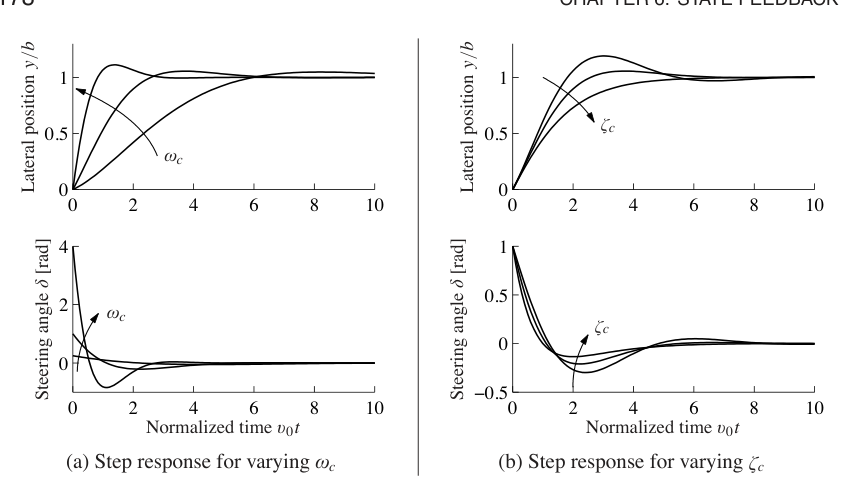
车辆转向系统这个例子说明，状态反馈可以用来把闭环系统特征值设置为任意给定值。
可达标准形系统的状态反馈
可达标准形的一个性质是，系统参数就是特征多项式的系数。因此，在求解特征值配置问题时，考虑这种形式的系统很自然。
考虑一个处于可达标准形的系统：
由式 (6.7) 可知，开环系统特征多项式为
在正式分析之前，可以先看图 6.4 的系统框图来获得直观理解。特征多项式由图中的参数 \(a_k\) 给出。注意，通过把状态 \(z_k\) 反馈到输入 \(u\)，就可以改变参数 \(a_k\)。因此，用状态反馈改变特征多项式系数是直接的。
回到方程，引入控制律
闭环系统变为
反馈改变了 \(A\) 矩阵第一行的元素，而这些元素正对应特征多项式中的参数。闭环系统因此具有特征多项式
要求这个多项式等于期望闭环多项式
可得控制器增益应选为
这个反馈只是把系统 (6.17) 中的参数 \(a_i\) 替换为 \(p_i\)。因此，可达标准形系统的反馈增益为
若要使零频增益等于 1，参数 \(k_r\) 应选择为
注意，为得到正确的零频增益，必须精确知道参数 \(a_n\) 和 \(b_n\)。因此，零频增益是通过精确标定得到的。这与后面将看到的积分作用很不一样，后者可以通过积分反馈获得正确稳态值。
特征值配置
前面的例子已经说明，反馈可以通过配置特征值来设计系统动态。要在一般情形下解决这个问题，只需改变坐标，使系统处于可达标准形。考虑系统
可以通过线性变换 \(z=Tx\) 改变坐标，使变换后的系统处于可达标准形 (6.15)。对这样的系统，反馈由式 (6.16) 给出，系数由式 (6.18) 给出。再变换回原坐标，得到反馈
所得结果可概括为下面定理。
定理 6.3 通过状态反馈配置特征值 考虑式 (6.20) 给出的单输入单输出系统。令
为 \(A\) 的特征多项式。如果系统可达，则存在反馈
使闭环系统具有特征多项式
反馈增益可写为
其中 \(W_r=\begin{bmatrix}B&AB&\cdots&A^{n-1}B\end{bmatrix}\)，\(\tilde W_r\) 是可达标准形系统的可达性矩阵。参考增益 \(k_r\) 由期望的零频增益确定，常用形式为式 (6.13)；在可达标准形且 \(D=0\) 时，可用式 (6.19)。
对简单问题，可以把 \(K\) 的元素 \(k_i\) 当成未知量来解特征值配置问题。先计算特征多项式
再把同次幂 \(s\) 的系数与期望特征多项式
中的系数相等。这样得到一组关于 \(k_i\) 的线性方程。如果系统可达，这组方程总能求解，例 6.4 中正是这样做的。
式 (6.21) 称为 Ackermann 公式 [3, 4]，可以用于数值计算。它在 MATLAB 函数 acker 中实现。对高阶系统，MATLAB 函数 place 更可取，因为它数值条件更好。
例 6.5 捕食者猎物
考虑通过调节食物供应来调控生态系统种群的问题。使用第 3.7 节引入的捕食者猎物模型。系统动态为
选择下面标称参数，它们与前面仿真中使用的值一致：
把参数 \(r\)，也就是野兔增长率，作为系统输入。实际中可以通过控制野兔的食物来源来调节它。模型中第一条方程的 \((r+u)\) 项反映了这一点。选择猞猁数量作为系统输出。
为控制系统，先在平衡点 \((H_e,L_e)\) 附近线性化。数值上得到
这给出线性动态系统
其中 \(z_1=H-H_e\)、\(z_2=L-L_e\)、\(v=u\)。容易检查，系统在平衡点 \((z,v)=(0,0)\) 附近可达，因此可以用状态反馈配置系统特征值。
闭环特征值的选择需要在输入调节能力与系统自然动态之间作权衡。这可以通过试错完成，也可以使用本书后面讨论的更系统的方法。这里先简单地选择期望闭环特征值
用前面描述的方法求解反馈增益，得到
最后利用式 (6.13) 求参考增益，得到
合在一起，控制律为
为了实现这个控制律，必须用原坐标重写：
这条规则告诉我们，应当怎样根据生态系统中当前野兔和猞猁数量调节增长率。图 6.7a 显示了所得闭环系统的仿真，参数取上面给出的值，初始种群为 15 只野兔和 20 只猞猁。可以看到，系统很快把猞猁种群稳定到参考值附近。图 6.7b 给出了系统相图，显示其他初始条件如何收敛到被稳定的平衡种群。注意，这些动态与自然动态非常不同，后者见图 3.20。
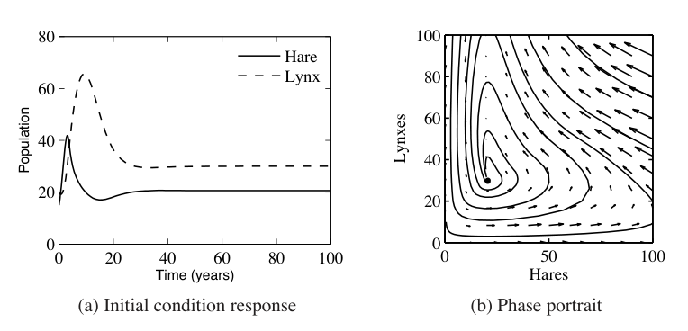
本节结果表明，在能够测量所有状态这一很强假设下，可以用状态反馈设计系统动态。下一章讨论输出反馈和状态估计时，会处理状态是否可得的问题。另外，定理 6.3 声称特征值可放置在任意位置，这同样高度理想化，并假设过程动态已被高精度掌握。状态反馈结合状态估计器后的鲁棒性将在第 12 章讨论，届时我们已经具备所需工具。
6.3 状态反馈设计
特征值位置决定闭环动态行为，因此把特征值放在哪里是主要设计决策。和所有反馈设计问题一样，控制输入大小、系统对扰动的鲁棒性以及闭环性能之间存在权衡。本节从二阶系统这个特殊情形开始，考察其中一些权衡。
二阶系统
二阶线性微分方程在反馈系统分析和设计中非常常见。正因为它们无处不在，把本章概念应用到这类系统上，并建立稳定性与性能之间关系的直观认识，是很有用的。
标准二阶系统是下面形式的微分方程：
写成状态空间形式，这个系统可表示为
系统特征值为
因此，当 \(\omega_0>0\) 且 \(\zeta>0\) 时，原点是稳定平衡点。注意，如果 \(\zeta<1\)，特征值为复数；否则为实数。式 (6.22) 和式 (6.23) 可描述许多二阶系统，包括带阻尼振子、有源滤波器和柔性结构，下面的例子会看到。
解的形式取决于 \(\zeta\) 的值，\(\zeta\) 称为系统阻尼比。如果 \(\zeta>1\)，称系统为过阻尼，系统自然响应 \(u=0\) 是两个衰减指数项之和：
其中
常数 \(c_1,c_2\) 由初始条件决定。如果 \(\zeta=1\)，称系统为临界阻尼，解变为
只要 \(\omega_0>0\)，这个解仍然渐近稳定，虽然括号中的第二项随时间增长，但它乘上的指数项衰减得更快。
最后，如果 \(0<\zeta<1\)，解为振荡形式，式 (6.22) 称为欠阻尼系统。参数 \(\omega_0\) 称为系统固有频率，因为当 \(\zeta\) 很小时，系统特征值近似为
系统自然响应为
其中
称为阻尼频率。当 \(\zeta\ll1\) 时，\(\omega_d\approx\omega_0\) 给出解的振荡频率，而 \(\zeta\) 给出相对于 \(\omega_0\) 的阻尼率。
由于二阶系统形式简单，可以解析求出阶跃响应和频率响应。阶跃响应的解取决于 \(\zeta\) 的大小。取 \(x(0)=0\)，有
注意，在轻阻尼情形 \(\zeta<1\) 下，解以频率 \(\omega_d\) 振荡。
图 6.8 显示了 \(k=1\) 且不同 \(\zeta\) 取值下系统的阶跃响应。响应形状由 \(\zeta\) 决定，响应速度由 \(\omega_0\) 决定，图中已经通过时间轴缩放体现出来：\(\omega_0\) 越大，响应越快。
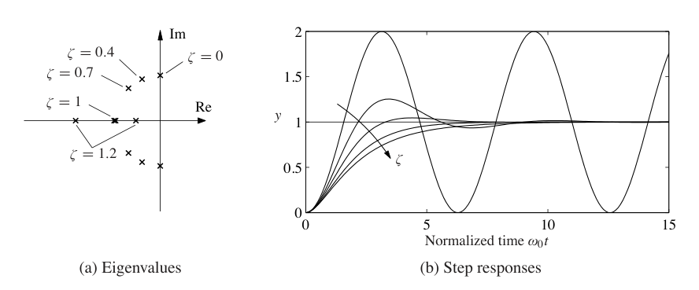
除了显式解，还可以计算第 5.3 节定义的阶跃响应性质。以欠阻尼系统最大超调量为例，把输出重写为
其中 \(\psi=\arccos\zeta\)。最大超调量发生在 \(y\) 的导数第一次为零时，可以证明
阶跃响应其他特征也可以类似计算。表 6.1 概括了这些结果。
表 6.1：\(0<\zeta<1\) 的二阶系统阶跃响应性质。
| 性质 | 表达式或近似 | \(\zeta=0.5\) | \(\zeta=1/\sqrt2\) | \(\zeta=1\) |
|---|---|---|---|---|
| 稳态值 | \(k\) | \(k\) | \(k\) | \(k\) |
| 上升时间 | 由 10% 到 90% 计算 | \(1.8/\omega_0\) | \(2.2/\omega_0\) | \(2.7/\omega_0\) |
| 超调量 | \(e^{-\pi\zeta/\sqrt{1-\zeta^2}}\) | 16% | 4% | 0% |
| 调节时间，2% | 约 \(4/(\zeta\omega_0)\) | \(8.0/\omega_0\) | \(5.9/\omega_0\) | \(5.8/\omega_0\) |
二阶系统的频率响应也可以显式计算：
图 6.9 给出了频率响应的图形说明。注意，阻尼比 \(\zeta\) 越小，谐振峰越大。这个峰常用 \(Q\) 值刻画，定义为
二阶系统频率响应性质概括在表 6.2 中。
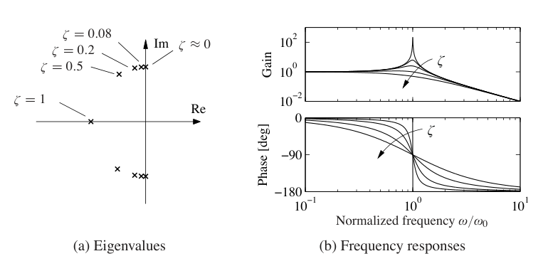
表 6.2：\(0<\zeta<1\) 的二阶系统频率响应性质。
| 性质 | 表达式 | \(\zeta=0.1\) | \(\zeta=0.5\) | \(\zeta=1/\sqrt2\) |
|---|---|---|---|---|
| 零频增益 | \(M_0=k\) | \(k\) | \(k\) | \(k\) |
| 带宽 | \(\omega_b=\omega_0\sqrt{1-2\zeta^2+\sqrt{4\zeta^4-4\zeta^2+2}}\) | \(1.54\omega_0\) | \(1.27\omega_0\) | \(\omega_0\) |
| 谐振峰值 | \(M_r=\dfrac{k}{2\zeta\sqrt{1-\zeta^2}}\) | \(5.03k\) | \(1.15k\) | \(k\) |
| 谐振频率 | \(\omega_{mr}=\omega_0\sqrt{1-2\zeta^2}\) | \(0.99\omega_0\) | \(0.707\omega_0\) | 0 |
例 6.6 药物给药
为说明这些公式的用法，考虑第 3.6 节描述的双隔室药物给药模型。系统动态为
其中 \(c_1,c_2\) 是两个隔室中的药物浓度，\(k_i\)、\(i=0,\ldots,2\) 以及 \(b_0\) 是系统参数，\(u\) 是进入隔室 1 的药物流速，\(y\) 是隔室 2 中药物浓度。假设可以测量每个隔室中的药物浓度，并希望设计反馈律，使输出维持在给定参考值 \(r\)。
选择 \(\zeta=0.9\) 来减小超调，并选取上升时间 \(T_r=10\) min。使用表 6.1 中公式，得到 \(\omega_0=0.22\)。现在可以计算把特征值放置到该位置所需的增益。令
系统闭环特征值满足
选择
即可得到期望闭环行为。式 (6.13) 给出参考增益
控制器响应如图 6.10 所示，并与周期性给药的开环策略进行比较。
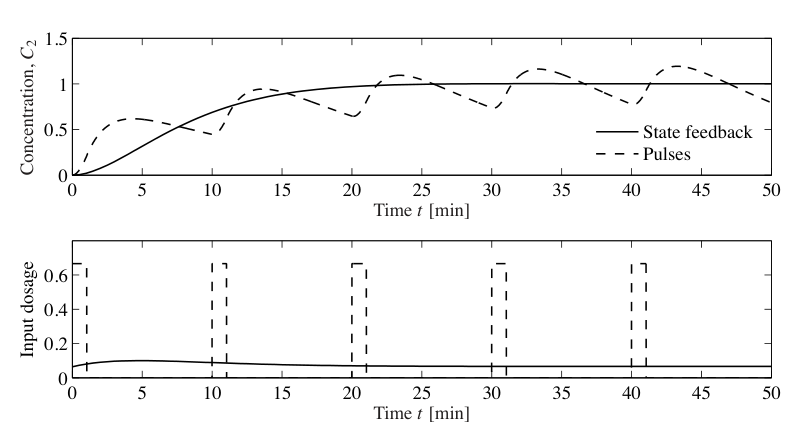
高阶系统
到目前为止，讨论重点只放在二阶系统。对高阶系统，特征值配置要困难得多，特别是当反馈设计中存在许多权衡时。
二阶系统在反馈系统中之所以如此重要，还有一个原因：即使对更复杂的系统，响应也常常由主导特征值刻画。为更精确地定义它们，考虑具有特征值 \(\lambda_j\)、\(j=1,\ldots,n\) 的系统。对复特征值 \(\lambda\)，定义阻尼比为
如果一对共轭复特征值 \(\lambda,\bar\lambda\) 与系统所有其他特征值相比具有最小阻尼比，就称它们为主导特征值对。
假设系统稳定，主导特征值对往往是响应中最重要的部分。为了说明这一点，设系统处于若尔当形，并且有一个简单若尔当块对应主导特征值对：
注意，由于若尔当变换，状态 \(z\) 可能是复数。系统响应是各个若尔当子系统响应的线性组合。从图 6.8 可以看到，当 \(\zeta<1\) 时，响应最慢的子系统正是阻尼比最小的子系统。因此，当把各个子系统响应相加后，其他解项造成的初始暂态消失以后，主导特征值对通常成为主要因素。这个简单分析并非总是成立，例如某些非主导项可能因为系统具体形式而具有更大系数，但在许多情况下，主导特征值确实决定了系统阶跃响应。
特征值配置的唯一形式要求是系统可达。实践中还有许多其他约束，因为特征值的选择会强烈影响控制信号的大小和变化率。大的特征值通常需要大的控制信号，以及信号的快速变化。因此，执行器能力会限制闭环特征值可能的位置。这些问题将在第 11 章和第 12 章深入讨论。
下面以平衡系统为例说明一些主要思想。
例 6.7 平衡系统
考虑稳定平衡系统的问题，其动态见例 6.2。系统动态为
其中 \(M_t=M+m\)、\(J_t=J+ml^2\)、\(\mu=M_tJ_t-m^2l^2\)，并且这里保留 \(c\) 和 \(\gamma\) 为非零。使用下面参数，它们大致对应一个人站在稳定小车上的情形：
开环动态有一个不稳定模态。例 6.2 已经验证该系统可达，因此可以使用状态反馈稳定系统，并给出期望性能水平。
为了决定闭环特征值应放在哪里，注意闭环动态大致由两部分组成：一组较快动态用于把摆稳定在倒立位置，另一组较慢动态用于控制小车位置。对快动态，可以参考摆在下垂位置的自然周期，
为得到快速响应，选择阻尼比 \(\zeta=0.5\)，并尝试把第一对特征值放在
这里使用了 \(\sqrt{1-\zeta^2}\approx1\) 的近似。对慢动态，选择阻尼比 0.7 以获得较小超调，并选择固有频率 0.5，使上升时间约为 5 s。这给出特征值
控制器由状态反馈和参考输入的前馈增益组成。反馈增益可以用定理 6.3 或 MATLAB 的 place 命令计算。所得控制器应用于线性化系统的阶跃响应见图 6.11a。虽然阶跃响应的形状看起来符合期望，但所需输入非常大，峰值几乎是重力的三倍。
为了得到更现实的响应，可以重新设计控制器，让动态变慢。可以看到，输入力峰值出现在较快时间尺度上，因此把这部分动态放慢 3 倍，同时保持阻尼比不变。第二组特征值也放慢，直觉上，小车位置应比摆的稳定化运动得更慢。慢动态阻尼比仍取 0.7，把频率改为 0.25，对应约 10 s 的上升时间，期望特征值变为
所得控制器性能见图 6.11b。
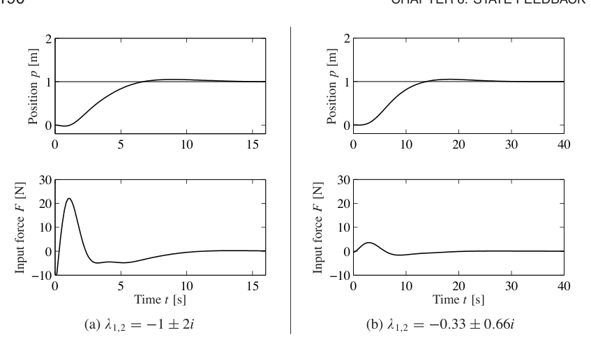
这个例子表明，仅靠状态反馈决定特征值位置可能很困难，尤其对高维系统更是如此。这是该方法的主要局限之一。下一节讨论的线性二次调节器这类最优控制技术，是一种可用方法。也可以关注频率响应来进行设计，这是第 8 章到第 12 章的主题。
线性二次调节器
除了直接选择闭环特征值位置来达成某个目标，也可以通过优化代价函数来选择状态反馈控制器增益。当需要在系统性能与实现这种性能所需的输入大小之间取得平衡时，这尤其有用。
无限时域线性二次调节器，简称 LQR，是最常见的最优控制问题之一。给定多输入线性系统
希望最小化二次代价函数
其中 \(Q_x\ge0\)、\(Q_u>0\) 是适当维数的对称正半定或正定矩阵。这个代价函数表示状态离原点的距离与控制输入代价之间的权衡。通过选择矩阵 \(Q_x\) 和 \(Q_u\)，可以平衡解的收敛速度和控制代价。
LQR 问题的解由如下线性控制律给出：
其中 \(P\in\mathbb{R}^{n\times n}\) 是正定对称矩阵，满足
式 (6.27) 称为代数 Riccati 方程，可以数值求解，例如使用 MATLAB 的 lqr 命令。
LQR 设计的一个关键问题是怎样选择权重 \(Q_x\) 和 \(Q_u\)。为了保证解存在，必须有 \(Q_x\ge0\)、\(Q_u>0\)。此外，\(Q_x\) 还需要满足某些可观性条件，这会限制它的选择。这里假设 \(Q_x>0\)，以确保代数 Riccati 方程总有解。
要为代价函数权重 \(Q_x,Q_u\) 选择具体数值，就必须利用对所控制系统的了解。一个特别简单的选择是使用对角权重：
在这种选择下，各个对角元素描述每个状态和输入的平方应当对总代价贡献多少。因此，希望保持较小的状态可以赋予较大权重。类似地，也可以通过选择对应输入权重 \(\rho\)，相对于状态和其他输入惩罚某个输入。
例 6.8 矢量推力飞机
考虑系统 (2.26) 的原始动态，写成状态空间形式为
见例 5.4。系统参数为
这些参数对应一个缩放后的系统模型。系统平衡点为 \(F_1=0\)、\(F_2=mg\)、\(z_e=(x_e,y_e,0,0,0,0)\)。为了推导平衡点附近的线性化模型，根据式 (5.34) 计算线性化：
令 \(z=z-z_e\)、\(v=u-u_e\)，线性化系统为
可以验证系统可达。
为了为系统计算线性二次调节器，写出代价函数
其中 \(z=z-z_e\)、\(v=u-u_e\) 表示围绕期望平衡点 \((z_e,u_e)\) 的局部坐标。先为状态和输入代价选择对角矩阵：
这给出形如 \(v=-Kz\) 的控制律，再可写回原变量：
例 5.4 已经计算了平衡点，其中 \(u_e=(0,mg)\)、\(z_e=(x_e,y_e,0,0,0,0)\)。图 6.12a 显示控制器对期望位置阶跃变化的响应。通过调节 LQR 代价中的权重，可以调整响应。图 6.12b 显示不同输入权重 \(\rho\) 下 \(x\) 方向的响应。
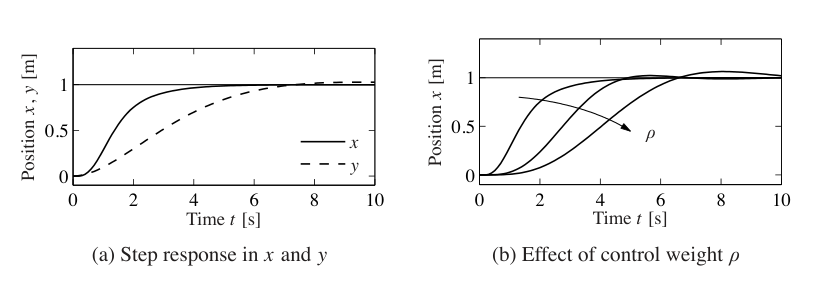
线性二次调节器也可以为离散时间系统设计，下面例子说明这一点。
例 6.9 Web 服务器控制
考虑第 3.4 节给出的 Web 服务器例子，那里给出了系统的离散时间模型。我们希望设计一条控制律，设置服务器参数，使服务器平均处理器负载维持在期望水平。由于服务器上可能运行其他进程，Web 服务器必须根据负载变化调节参数。
图 6.13 给出了控制系统框图。这里关注一个特殊情形：只用 KeepAlive 和 MaxClients 两个参数来控制处理器负载。还在测得负载中加入一个扰动，表示服务器上其他进程消耗的处理周期。系统基本结构与图 6.5 中的一般控制系统相同，只是扰动进入的位置在过程动态之后。
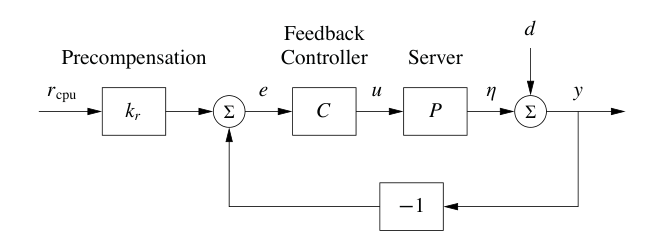
系统动态由差分方程给出：
其中 \(x=(x_{\mathrm{cpu}},x_{\mathrm{mem}})\) 是状态，\(u=(u_{\mathrm{ka}},u_{\mathrm{mc}})\) 是输入，\(d_{\mathrm{cpu}}\) 是计算机上其他进程的处理负载，\(y_{\mathrm{cpu}}\) 是总处理器负载。选择状态反馈控制器
其中 \(r_{\mathrm{cpu}}\) 是期望处理器负载。注意，这里用测得的处理器负载 \(y_{\mathrm{cpu}}\) 来保证系统根据实际负载调整运行状态。这个修改是必要的，因为扰动进入过程动态的方式并不标准。
反馈增益矩阵 \(K\) 可以用本章描述的任意方法选择。这里使用线性二次调节器，代价函数权重为
状态代价 \(Q_x\) 的选择使我们更重视处理器负载而非内存使用。输入代价 \(Q_u\) 用来归一化两个输入，使 50 s 的 KeepAlive 超时和 1000 的 MaxClients 数值具有相同权重。由于输入代价为 \(u^TQ_uu\)，所以这些值要取平方。使用第 3.4 节的动态和 MATLAB 的 dlqr 命令，得到增益
和连续时间控制系统一样，参考增益 \(k_r\) 需要选择为给出期望平衡点。令 \(x[k+1]=x[k]=x_e\)，给定参考输入 \(r\) 时的稳态平衡点与输出为
这是关于 \(k_r\) 的矩阵方程，其中 \(k_r\) 是一个列向量，根据期望参考设置两个输入值。如果期望输出形式为 \(y_e=(r,0)\)，则需要求解
解得
闭环系统动态如图 6.14 所示。在 \(t=10\) s 时施加负载变化 \(d_{\mathrm{cpu}}=0.3\)，迫使控制器调整服务器运行方式，以试图把期望负载维持在 0.57。可以看到，KeepAlive 和 MaxClients 两个参数都会被调整。虽然负载有所降低，但仍然比期望稳态高约 0.2。使用下一节技术可以得到更好的结果。
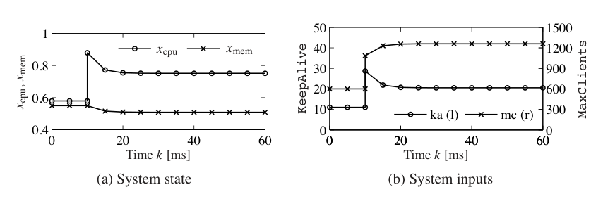
6.4 积分作用
基于状态反馈的控制器通过仔细标定增益 \(k_r\)，实现对命令信号的正确稳态响应。不过，反馈的主要用途之一，是在存在不确定性时仍然获得良好性能，因此要求我们拥有精确过程模型并不理想。标定的另一种替代方法是使用积分反馈，控制器用一个积分器来提供零稳态误差。第 1.5 节和第 3.1 节已经给出积分反馈的基本概念，这里作更完整的描述和分析。
积分反馈的基本方法，是在控制器内部创建一个状态，用来计算误差信号的积分，再把这个状态作为反馈项。通过给系统描述增广一个新状态 \(z\) 来实现：
状态 \(z\) 是实际输出 \(y\) 与期望输出 \(r\) 之差的积分。注意，如果找到一个能稳定系统的补偿器，那么稳态时必然有 \(\dot z=0\)，因此稳态时 \(y=r\)。
给定增广系统后，像通常一样设计状态空间控制器，控制律取为
其中 \(K\) 是通常的状态反馈项，\(k_i\) 是积分项，\(k_r\) 用于设置期望稳态的标称输入。系统平衡点满足
注意，\(z_e\) 的值并不是预先指定的，而是会自动收敛到使 \(\dot z=y-r=0\) 的值。这意味着平衡时输出等于参考值。只要系统稳定，这一点与 \(A,B,K\) 的精确数值无关，而系统稳定可以通过适当选择 \(K\) 和 \(k_i\) 实现。
最终补偿器为
这里已经把积分器动态作为控制器规格的一部分。这类补偿器称为动态补偿器，因为它有自己的内部动态。下面例子说明基本方法。
例 6.10 巡航控制
考虑第 3.1 节引入并在例 5.11 中进一步讨论的巡航控制问题。过程在平衡点 \(v_e,u_e\) 附近的线性化动态为
其中 \(x=v-v_e\)、\(w=u-u_e\)、\(m\) 是汽车质量，\(\theta\) 是道路坡度角。常数 \(a\) 依赖油门特性，见例 5.11。
如果用积分器增广系统，过程动态变为
写成状态空间形式：
注意，当系统处于平衡时，有 \(\dot z=0\)，这意味着车速 \(v=v_e+x\) 应等于期望参考速度 \(v_r\)。控制器取为
增益 \(k_p,k_i,k_r\) 将用于稳定系统，并为参考速度提供正确输入。
假设希望闭环系统具有特征多项式
令扰动 \(\theta=0\)，闭环系统特征多项式为
因此设
得到的控制器稳定系统，因此使 \(\dot z=y-v_r\) 趋于零，实现精确跟踪。注意，即使定义系统的参数存在小误差，只要闭环特征值仍然稳定，跟踪误差就会趋于零。因此，前一种方法中通过 \(k_r\) 所要求的精确标定，在这里不再需要。事实上，甚至可以选择 \(k_r=0\)，让反馈控制器完成全部工作。
积分反馈也可以补偿常值扰动。图 6.15 显示了一次仿真结果，汽车在 \(t=8\) s 遇到坡度 \(\theta=4^\circ\) 的山坡。这个外部扰动不影响系统稳定性，因此汽车速度再次收敛到参考速度。处理常值扰动是带积分反馈控制器的一般性质，见习题 6.4。
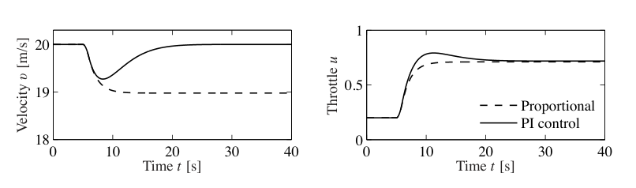
6.5 延伸阅读
卡尔曼的奠基性论文 [113] 讨论了状态模型和状态反馈的重要性，其中状态反馈增益通过求解最小化二次损失函数的优化问题得到。可达性和可观性，也就是第 7 章主题，同样来自卡尔曼 [115]，也见 [82, 118]。卡尔曼把可控性定义为到达原点的能力，把可达性定义为到达任意状态的能力 [117]。需要说明的是，大多数教材使用可控性这个术语来代替可达性，不过我们更偏好后者，因为它更直接描述了能够到达任意状态这一基本性质。
大多数本科控制教材都包含状态空间系统材料，例如富兰克林、鲍威尔和埃马米-奈尼 [79] 以及小畑 [162]。弗里德兰 [80] 的教材非常详细地讲解了前一章、本章和下一章的内容，也包括最优控制主题。
习题
6.1 双积分器。考虑双积分器。找出一个分段常值控制策略，把系统从原点驱动到状态 \(x=(1,1)\)。
6.2 从非零初始状态出发的可达性。扩展第 6.1 节中的论证，证明如果系统从零初始状态可达，那么它也从非零初始状态可达。
6.3 不可达系统。考虑图 6.3 所示系统。把两个系统动态写成
如果 \(x\) 和 \(z\) 有相同初始条件，那么无论施加什么输入，它们始终具有相同状态。证明这违反可达性的定义，并进一步证明可达性矩阵 \(W_r\) 不是满秩。
6.4 用积分反馈抑制常值扰动。考虑形如
的线性系统，其中扰动 \(d\) 通过扰动向量 \(F\in\mathbb{R}^n\) 进入系统。证明积分反馈可用于补偿常值扰动，使即使在 \(d\ne0\) 时也能得到零稳态误差。
6.5 后轮转向自行车。第 3.2 节式 (3.5) 给出了一个简单自行车模型。把该模型中速度符号反过来，可得到后轮转向自行车模型。确定该系统可达的条件，并解释系统不可达的情形。
6.6 可达标准形的特征多项式。证明可达标准形系统的特征多项式由式 (6.7) 给出，并且
其中 \(z_k\) 是第 \(k\) 个状态。
6.7 可达标准形的可达性矩阵。考虑可达标准形系统。证明可达性矩阵的逆为
6.8 不能维持的平衡点。考虑小车上摆的归一化模型
其中 \(x\) 是小车位置，\(\theta\) 是摆角。能否维持 \(\theta=\theta_0\)、\(\theta_0\ne0\) 的平衡？
6.9 不可达系统的特征值配置。考虑系统
并使用控制律
证明该系统的特征值不能被配置到任意值。
6.10 Cayley-Hamilton 定理。令 \(A\in\mathbb{R}^{n\times n}\) 是一个矩阵，其特征多项式为
证明矩阵满足
并利用这一点证明当 \(k\ge n\) 时，\(A^k\) 可以写成低于 \(n\) 阶的 \(A\) 的幂的组合。
6.11 电机驱动。考虑习题 2.10 中电机驱动的归一化模型。使用下面归一化参数：
验证开环系统特征值为
设计状态反馈，使闭环系统特征值为
这个选择意味着振荡特征值会被充分阻尼，并且原点处的特征值被替换为负实轴上的特征值。仿真闭环系统对命令信号阶跃变化以及第二转子扰动转矩阶跃变化的响应。
6.12 Whipple 自行车模型。考虑第 3.2 节式 (3.7) 给出的 Whipple 自行车模型。该模型在速度 \(v=5\) m/s 时不稳定，开环特征值为
求一个控制器的增益，使自行车稳定，并给出闭环特征值
仿真系统对 0.002 rad 转向参考阶跃变化的响应。
6.13 原子力显微镜。考虑例 5.9 中给出的接触模式 AFM 模型：
使用配套网站上的 MATLAB 脚本 afm_data.m 生成系统矩阵。
(a) 计算系统可达性矩阵并确定其秩。把时间单位从秒改成毫秒，对模型进行缩放。再次计算可达性矩阵及其秩。
(b) 找到一个状态反馈控制器，使闭环系统具有阻尼比 0.707 的复极点。使用缩放后的模型进行计算。
(c) 使用线性二次控制计算状态反馈增益。尝试不同权重。计算 \(q_1=q_2=0\)、\(q_3=q_4=1\)、\(R=1\)、\(\rho=0.1\) 时的增益，并解释结果。再选择 \(q_1=q_2=q_3=q_4=r_1=1\)，考察改变 \(\rho\) 时反馈增益和闭环特征值会怎样变化。这个计算使用缩放后的系统。
6.14 考虑二阶系统
令初始条件为零。
(a) 证明单位阶跃响应的初始斜率为 \(a\)。讨论当 \(a<0\) 时意味着什么。
(b) 证明单位阶跃响应上存在一些点对 \(a\) 不变。定性讨论参数 \(a\) 对解的影响。
(c) 仿真该系统，考察 \(a\) 对上升时间和超调量的影响。
6.15 Bryson 规则。Bryson 和 Ho [47] 建议用下面方法选择式 (6.26) 中的矩阵 \(Q_x\) 和 \(Q_u\)。先把 \(Q_x\) 和 \(Q_u\) 选为对角矩阵，其元素为对应变量最大值平方的倒数。然后调整这些元素，在响应时间、阻尼和控制努力之间取得折中。把这个方法应用到习题 6.11 的电机驱动。假设 \(\theta_1\) 和 \(\theta_2\) 的最大值为 1，\(\dot\theta_1\) 和 \(\dot\theta_2\) 的最大值为 2，最大控制信号为 10。仿真闭环系统在 \(\theta_2(0)=1\)、其他状态初值均为 0 时的响应。考察 \(Q_x\) 和 \(Q_u\) 对角元素不同取值的影响。